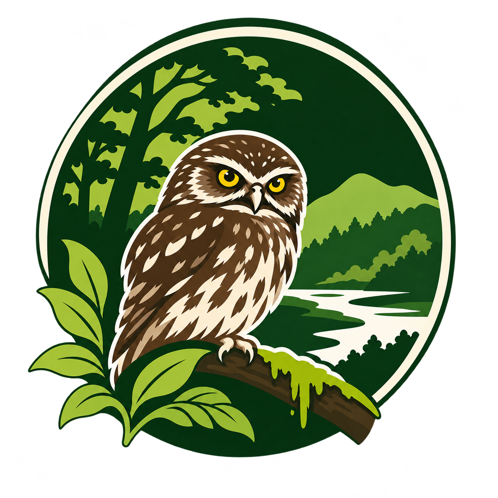

Encuentra tu lugar.
Recorre el mapa de Valdivia y acércate a la zona que quieres conocer.

BioAtlasPROYECTO CONDORDESDE LOS BIOTOPOS DE VALDIVIA · CHILE
A veces basta con detenerse a mirar.
Conoce la vida que habita nuestros biotopos y encuentra tu próxima razón para salir.
En tu navegador. Sin crear una cuenta.
01 / NUESTRA RAZÓN DE SER
Valdivia se cuenta también en sus ríos, sus biotopos y las especies que los habitan. BioAtlas nace para acercarte a esa biodiversidad, un avistamiento a la vez.
Reunimos registros en un mapa para que puedas explorar tu entorno, buscar especies y descubrir qué se ha observado cerca de ti.
Abrir el atlas de avistamientos ↗02 / UNA INVITACIÓN A OBSERVAR
Recorre el mapa de Valdivia y acércate a la zona que quieres conocer.
Busca por nombre y consulta los detalles y la fuente de cada registro.
Desde la app podrás compartir tus avistamientos para su revisión.
03 / BIOATLAS EN EL BOLSILLO
Estamos preparando BioAtlas para iOS y Android.
Mientras tanto, puedes recorrer el atlas desde tu navegador.
Consulta los avistamientos desde tu computador, sin iniciar sesión.
Explorar versión web →